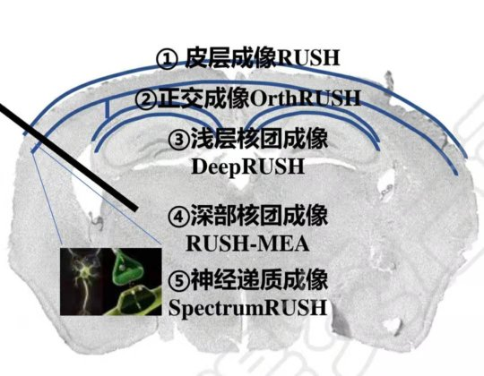
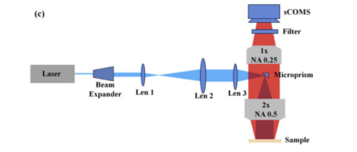
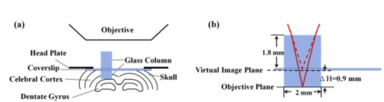
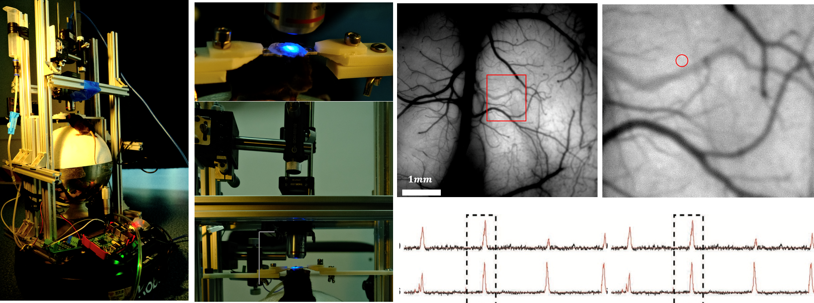

Welcom to the miniRUSH project
miniRUSH project aims at developping open-source cortex-wide optical microscopy for dynamic neural imaging. This project is lead by Dr. Hao Xie at Department of Automation, Tsinghua Unviersity, under the supervision of Prof. Dai. This project consitst of the following parts： * RUSHmini： low-cost alternatives of RUSH microscopy that enables cortex-wide cellular-resolution imaging. * curveRUSH： optically transform the focal plane into a cylindrical surface to adapt to the crystal skull of mouse in cortex-wide brain imaging. * deepRUSH: overcoming the scattering problem of optical microscopy by insersion of optical pathways, like galss columns, micro-prisms, and grin lens. * RUSH-MEA： Simutaneous optical and electric recording/stimulation with RUSH and micro-electrode array. * spectrum-RUSH： simutaneous optical imaging of multiple colors, which enables the study of neural-transmitter interactions. * RUSH-behavior： building the connection between neural coding and rodent behaviors.
Please contact xiehao@tsinghua.edu.cn for further informations.

RUSHmini
|  |
|---|
| The RUSH project is a tremendous project with a total cost of more than $10,000,000. In order to reduce the cost of the cortex-wide brain imaging technique to make it accessible to researchers all over the world, we introduce RUSHmini, which aquires macro-resolution and sub-centimeter scale field of view. Consists of macro zoom microscope lens or evendigital camera lens, the cost of a RUSHmini system can be reduced to 30,000. We have demonstrate its capbilities of cortex-wide neural dynamic imaging at cellular resolution in mice. |
deepRUSH
|  |
|---|
| Interactions between the cerebral cortex and the deep cerebellar nuclei play important roles in cognitive processes. However, conventional microscopes fail to dynamically record cellular structures in distinct brain regions and at different depths, which requires high resolution, large field of view (FOV), and depth of field (DOF). Here we propose a single-photon excited fluorescence microscopy technique that performs simultaneous cortex and hippocampus imaging, enabled by a customized microscope and a chronic optical window. After we implant a glass microwindow above the hippocampus, the surface of the hippocampus is shifted to the superficial plane. We demonstrate that the proposed technique is able to image cellular structures and blood vessel dynamics in the cortex and the hippocampus in in vivo experiments, and is compatible with various mesoscopic systems.We have also inserted micro-prism to investigate neural activity in mPFC. Now we are attempting to combine this technique with GRIN lens for deeper imaging. |
curveRUSH
Conventional optical microscope has a flat focal plane and restricted focal of depth. However, the skull of the mouse is close to a cylinder. To approximate its curvature, we adopt time division multiplexing techinique to achive fast aquisition on a cylinder, with a maximun frequency of 100 fps.
RUSH-MEA
Electrods have their unique advantages of high temporal resolution and minimal damage to the brain tissue, but they failed to provide high spatial resolution. We combined RUSH microscopy and multi-electrode array (MEA) to achieve simutaneous observation in both superficial layer and deep nuclei. This is a joint project with Dr. Guihua Xiao.
spectrumRUSH
To reveal the causal relationship between neural activities and neural transmitters, we need to observe different types neural transmitters simutaneouly, which are labeled with different fluorescence proteins. We have built spectrumRUSH for this purpose. This project is joint-project with Dr. Jiesi Feng and Dr. Fei Deng from Peking Unversity.
RUSH-behavior
| | |-| * acoustic-RUSH: explore the relationship between single neural signals in the desicion making process. * visual-RUSH: decode the neural signals under visual stimulations. * RUSH-VR: compare animal neural activities in complex scenarios, which can be compared with RL. * micro-beta: build a mobile platform to meausre mouse brain activity in complex scenarios.